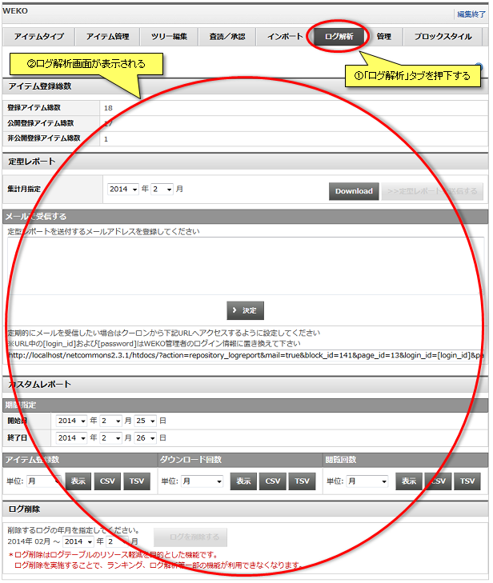
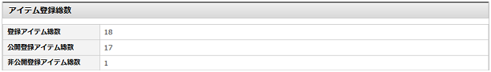
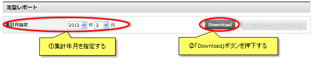
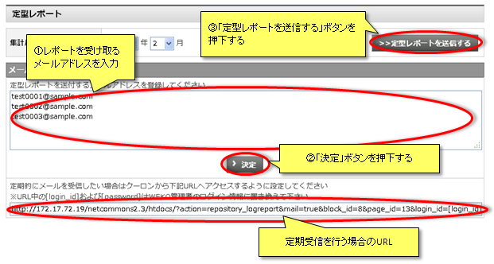
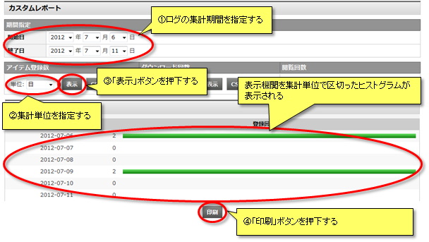
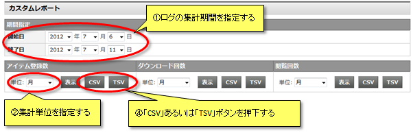
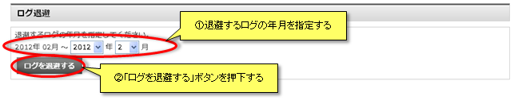

ログ解析
「ログ解析」タブをクリックするとログ解析画面が表示されます。
ログの集計、解析を行い、その結果を表示またはダウンロードすることができます。

ログの集計、解析を行い、その結果を表示またはダウンロードすることができます。
アイテム登録総数
WEKOに登録されたアイテムの総数を表示します。
登録アイテム総数、公開登録アイテム総数、非公開登録アイテム総数が表示されます。

登録アイテム総数、公開登録アイテム総数、非公開登録アイテム総数が表示されます。
定型レポート
指定した期間の定型レポートをTSV(タブ区切りテキスト)形式でダウンロードすることができます。
定型レポートは下記4種類です。
集計年月をセレクトボックスから指定し、「Download」リンクをクリックします。
「Download」リンクをクリックするとファイル保存ダイアログが起動し、定形レポートをダウンロードすることができます。

【注意事項】
定型レポートは下記4種類です。
| ファイル名 | ログ内容 |
|---|---|
| logReport_IndexAccess_YYYYMM.tsv | 各インデックスに所属するアイテムのアイテム詳細画面アクセス数 |
| logReport_PayPerView_YYYYMM.tsv | 課金およびオープンアクセスファイルのダウンロード数 |
| logReport_SiteAccess_YYYYMM.tsv | サイトライセンスを設定しているホストからのアクセスとサイトライセンス以外からのアクセス数 |
| logReport_SuppleAccess_YYYYMM.tsv | サプリメンタルコンテンツアクセス数およびダウンロード数 |
集計年月をセレクトボックスから指定し、「Download」リンクをクリックします。
「Download」リンクをクリックするとファイル保存ダイアログが起動し、定形レポートをダウンロードすることができます。
【注意事項】
- 定型レポートでダウンロードできるファイルは、4種類のTSV(タブ区切りテキスト)形式ファイルを圧縮したZIPアーカイブとなります。
定型レポート メール送信
指定した期間の定型レポートを登録したメールアドレスで受信することができます。
定型レポートを受け取るメールアドレスを入力し、「決定」ボタンをクリックします。
「>>定型レポートを送信する」ボタンをクリックすると登録したメールアドレスへ定型レポートが送信されます。
定期的にメールを受信する場合、
図中のURLから[login_id]および[password]をWEKO管理者のログイン情報に置き換えた上で、クーロンから指定されたURLへアクセスするように設定します。

定型レポートを受け取るメールアドレスを入力し、「決定」ボタンをクリックします。
「>>定型レポートを送信する」ボタンをクリックすると登録したメールアドレスへ定型レポートが送信されます。
定期的にメールを受信する場合、
図中のURLから[login_id]および[password]をWEKO管理者のログイン情報に置き換えた上で、クーロンから指定されたURLへアクセスするように設定します。
カスタムレポート
下記3種類のデータを指定した期間のログから集計することができます。
また、集計データを「日」「週」「月」「年」「アイテム」「ホスト」ごとに区切ったヒストグラムで表示またはダウンロードすることができます。
セレクトボックスから集計期間および集計単位を選択し、「表示」ボタンを押下すると集計対象データのヒストグラムが表示されます。
「印刷」ボタンを押下すると印刷プレビュー画面が別ウィンドウに表示されます。

セレクトボックスから集計期間および集計単位を選択し、「CSV」および「TSV」ボタンを押下するとファイル保存ダイアログが起動し、集計結果をCSV(カンマ区切りテキスト)またはTSV(タブ区切りテキスト)形式でダウンロードできます。

また、集計データを「日」「週」「月」「年」「アイテム」「ホスト」ごとに区切ったヒストグラムで表示またはダウンロードすることができます。
| 名称 | ログ内容 |
|---|---|
| アイテム登録数 | 期間中に登録されたアイテムの数 |
| ダウンロード回数 | 期間中にダウンロードされたアイテムの数 |
| 閲覧回数 | 期間中に閲覧されたアイテムの数 |
セレクトボックスから集計期間および集計単位を選択し、「表示」ボタンを押下すると集計対象データのヒストグラムが表示されます。
「印刷」ボタンを押下すると印刷プレビュー画面が別ウィンドウに表示されます。
セレクトボックスから集計期間および集計単位を選択し、「CSV」および「TSV」ボタンを押下するとファイル保存ダイアログが起動し、集計結果をCSV(カンマ区切りテキスト)またはTSV(タブ区切りテキスト)形式でダウンロードできます。
ログ削除
指定した期間のログを削除することができます。
WEKOの可動年月から現在の一月前までのログを対象に指定する事ができます。

WEKOの可動年月から現在の一月前までのログを対象に指定する事ができます。